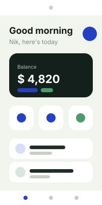
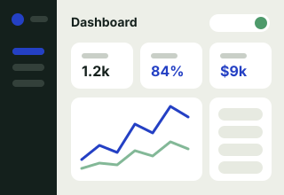
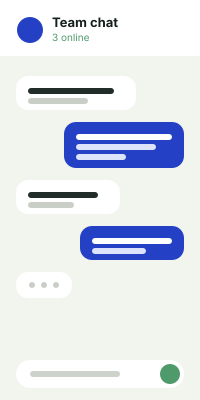
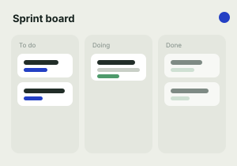

SaveMe
Java · Firebase
What did I spend my money on?
Daily logging felt like homework. This app apply minimum step for you to keep track you spending. Track you behaviour and manage it accordingly
Nik Harun, Kuala Lumpur
Software engineer and UX researcher. I work the whole loop: desk research and user interviews at the front, development in the middle, and a shipped thing at the end that someone can actually measure.
Based in Kuala Lumpur
Local time —
Right now Open to work
Three moves, always in this order. Each one produces something the next one needs.
Desk research, competitor teardowns, interviews and usability sessions. I go in with tasks, not opinions, and I watch what people do before I ask them anything.
Produces a short brief separating what we know from what we assumed.
A working prototype, fast, with AI in the loop. Vibe coding gets me a first draft in an afternoon. Then I read every line of it, because a draft nobody reviewed is a liability, not a shortcut.
Produces something clickable, in front of real users, inside a week.
Production code with tests, accessible markup and an honest error state. Then back to the users to find out whether the change did what we said it would.
Produces a shipped feature and a straight answer about whether it worked.
Each card carries the question that started it and what the work changed.

Java · Firebase
What did I spend my money on?
Daily logging felt like homework. This app apply minimum step for you to keep track you spending. Track you behaviour and manage it accordingly

React · Express
Is your students progressing accordingly?
A system that you manage your teaching and hub for student to get their studies done. Always implement feedback trait to get good track of the student and produce high quality product.

Java · Postgress · Gemini
Need guide on learning material?
Give you guide to your learning material based on objective. Prevent you from wasting time on irrelevant material. Produce a learning path with clear objective.

React · Express
Connect with kariah masjid?
Help to connect with kariah masjid and give the latest update on masjid activities. Help masjid management and plannings also.
What I reach for, and what I reach for it for.
I am looking for work where research and engineering sit in the same pair of hands: a small team, a real user, and permission to go find out before building.